Recently, I used Matlab to conduct simulation experiments on 3D data of various different models. Many of them require fitting 3D data. Matlab comes with a fitting toolbox (cftool), which is indeed powerful. Using the toolbox for data fitting saves a lot of trouble. For original models with sufficient data sets, cftool can very accurately fit the results we want. Of course, we are not talking about Matlab. This article has nothing to do with Matlab at all. ~~ I've talked too much; let's begin now.
I. Data Prototype
First, import a complete data table. We can see that this is a y=9 x=15 matrix, with a size of 9x15. Each element of the matrix corresponds to a value z. The second figure is the data we picked out from the corresponding positions in the first figure. It is a valid matrix of size 3x5.
In this way, we have virtually created data with a defect rate as high as about 90% from the original data. Our subsequent interpolation fitting is then aimed at performing corresponding calculations on this incomplete data.
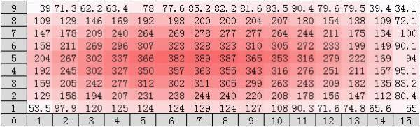
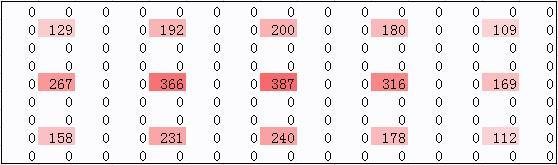
II. Interpolation Fitting
1. Concept Introduction
Given two numbers (129, 192), you are asked to linearly insert a value between them. Actually, there are many ways to insert. For example, linear in a 2D plane: B2 = (A1+A2)/2, or linear in 3D space; we use the following.
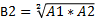
A： 192 129
B ：192 157 129
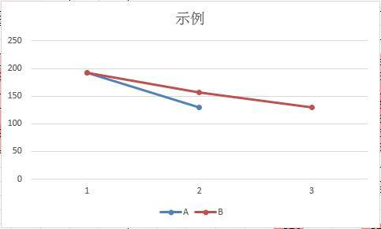
2. First-order Fitting
After the above concept introduction, we next perform first-order interpolation on our incomplete data. Refer to the formula below.
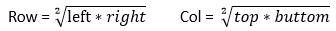
The black boxes are valid vertex data. We use the algorithm to traverse any two vertices. As long as one of them is valid data (black box; this is very important, very important, very important — important things must be said three times), insert a data point (blue box data). For example, between row-adjacent vertices 129 and 192, insert 157; between adjacent vertices 129 and 267, insert 186. The results are shown in the figure below.
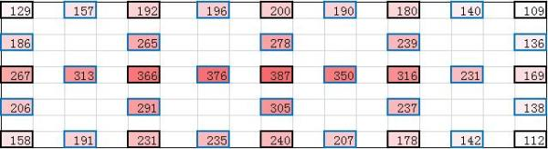
Is the first-order interpolation finished? No, look at the data above again. After the first round of insertion, the newly added adjacent vertices still need interpolation. Since my data matrix is not large, after the second round of insertion, I can no longer find adjacent blank points in my data. If the data matrix is very large, in terms of algorithm implementation, at this point our code can be written in recursive form, and it will not start popping the stack until all insertions are done (the effect is as follows).
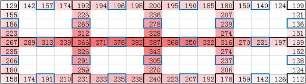
>3. Second-order Fitting
Our second-order fitting is entirely adjusted based on the results of the first-order fitting. My second-order design is to interpolate a green-box data point through four valid vertices (black boxes are valid vertices; important things are said once). AD is diagonal, BC is diagonal. Refer to the following formula.
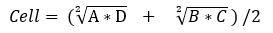
Note: after insertion, first-order fitting is not performed. First-order requires black-box data support; any two blue or green data points do not need it.
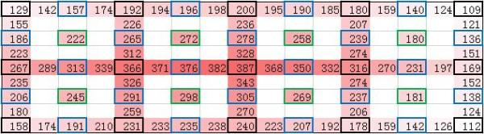
For better appearance, I removed the first-order content. If the result of the first-order fitting is not my model below, a model transformation is needed. How exactly to do it? Think about it yourself, or leave me a message (for the core, private chat).
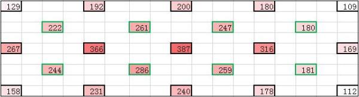
4. Third-order Fitting
Third-order interpolation is basically the same as second-order interpolation. The only difference: any four vertices (not limited to black boxes), insert according to the formula above. Get the second figure.
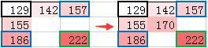
5. Delete Auxiliary Points
Finally, let me tell everyone that above, except for the black boxes which are valid data, the boxes of other colors are auxiliary data, similar to the auxiliary lines drawn when solving geometry problems. Now delete them. Refer to the result after deletion below.
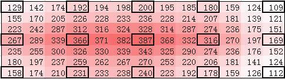
6. Compare Deviation with Data Prototype
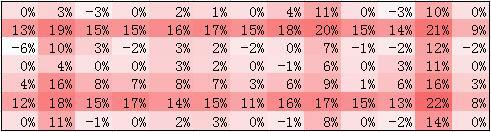
The average deviation is 7% and the maximum deviation is 22%. Relatively speaking, the fitting is quite good. Don't forget I only have 10% of the data and need to fit 90% of the data.
7. Result Output
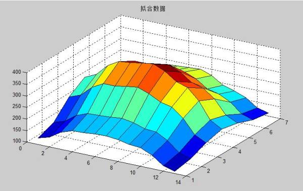
8. Summary
95% of the time is spent thinking of a solution, and 5% of the time is spent writing the solution into code. After reading this article, can surface fitting be easily handled?
(This algorithm is based on symmetric, regular models; the adaptability to irregular models has not been tested yet). Please like before leaving!
Author: showlo
Link: https://zhuanlan.zhihu.com/p/24275757
Source: Zhihu